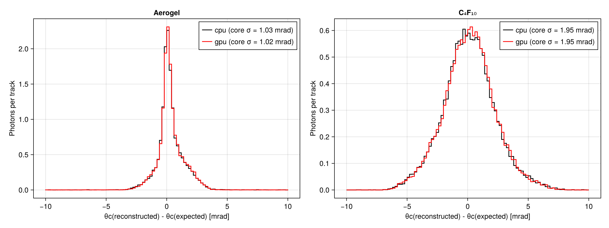
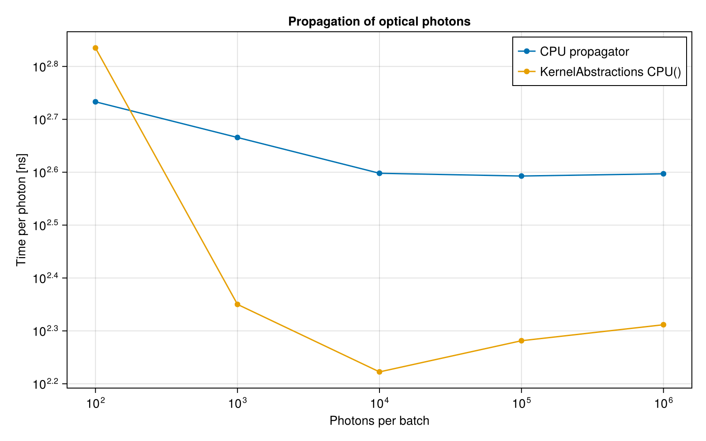

RICH Detector with Optical Photons Offloaded to a GPU
This example continues the RICH Detector with Offloaded Optical Photons example. The optical photons are again collected by the stacking action and killed, but they are now propagated on a GPU. The propagator in RICHTracerGPU.jl is a port of the CPU ray tracer to a KernelAbstractions.jl kernel, with one GPU thread per photon. The same kernel runs on Apple GPUs (Metal.jl), NVIDIA GPUs (CUDA.jl), AMD GPUs (AMDGPU.jl), or on the CPU with Julia threads.
A GPU needs many photons at once to be efficient: launching a kernel and copying the data costs some tens of microseconds, about the time the CPU needs to propagate the few hundred photons of one event in this detector. The photons of many events are therefore collected and offloaded together in batches, and the hits are reconstructed when the results come back.
The example shows:
- choosing a KernelAbstractions backend (CUDA, Metal or CPU threads) and the floating point precision
- collecting the photons of several events and offloading them in batches, including the last incomplete batch in the end-of-run action
- comparing the hits and the reconstructed Cherenkov angles with the CPU propagator
- measuring the throughput of the CPU and GPU propagators as a function of the batch size
You can also download this example as a Jupyter notebook and a plain Julia source file.
Table of contents
- Loading the necessary Julia modules
- Choose the backend
- Detector, physics and primary generator
- The CPU and GPU propagators
- Define the Simulation Data
- Reconstruction of the Cherenkov angle
- Offloading a batch
- Define the User Actions
- Create the Application
- Configure and Initialize
- CPU versus GPU propagation
- Single photon resolution
- Throughput as a function of the batch size
Loading the necessary Julia modules
In addition to the modules of the RICH example we load KernelAbstractions and a GPU package: Metal on macOS and CUDA elsewhere. Both can be loaded on machines without a GPU.
using Geant4
using Geant4.SystemOfUnits
using Geant4.PhysicalConstants
using FHist, GeometryBasics, Printf
using LinearAlgebra: dot, normalize ## Geant4 also exports `dot`
using KernelAbstractions
if Sys.isapple()
using Metal
else
using CUDA
end
using CairoMakie
Choose the backend
We use an NVIDIA GPU (CUDA) or an Apple GPU (Metal) if there is one, and otherwise the CPU backend of KernelAbstractions (with as many threads as Julia was started with, e.g. julia -t auto). GPUs use single precision: Apple GPUs do not support Float64, and most NVIDIA GPUs (except the data-centre ones, such as A100 or H100) are much slower in double precision. On those you can set T = Float64; the geometrical tolerance of GPUTracer{T} follows the precision.
backend, T = if @isdefined(CUDA) && CUDA.functional()
CUDABackend(), Float32
elseif @isdefined(Metal) && Metal.functional()
MetalBackend(), Float32
else
CPU(), Float64
end
@printf "Backend: %s, precision: %s, Julia threads: %d\n" backend T Threads.nthreads()Backend: KernelAbstractions.POCL.POCLKernels.POCLBackend(), precision: Float64, Julia threads: 4
Detector, physics and primary generator
The detector, the physics list and the primary generator are the same as in the RICH Detector example. The detector is defined in RICHDetector.jl.
include(joinpath(@__DIR__, "RICHDetector.jl"))
rich = RICHDetector()
struct RICHPhysics <: G4VUserPhysicsList
function RICHPhysics(verbose)
pl = FTFP_BERT(verbose)
RegisterPhysics(pl, move!(G4OpticalPhysics(verbose)))
return pl
end
end
mutable struct RICHGunData <: G4JLGeneratorData
gun::Union{Nothing, CxxPtr{G4ParticleGun}}
particles::Vector{String}
pmin::Float64
pmax::Float64
θmin::Float64
θmax::Float64
##---the current track
particle::String
mass::Float64
momentum::Float64
direction::Vec3{Float64}
end
function RICHGunGenerator(; particles=["pi+", "kaon+", "proton"], pmin=1GeV, pmax=80GeV, θmin=50mrad, θmax=250mrad)
data = RICHGunData(nothing, particles, pmin, pmax, θmin, θmax, "", 0., 0., Vec3(0.,0.,1.))
function init(data::RICHGunData, ::Any)
data.gun = move!(G4ParticleGun())
SetParticlePosition(data.gun, G4ThreeVector(0, 0, 0))
end
function generate(evt::G4Event, data::RICHGunData)::Nothing
gun = data.gun
data.particle = rand(data.particles)
SetParticleByName(gun, data.particle)
data.mass = gun |> GetParticleDefinition |> GetPDGMass
data.momentum = data.pmin * (data.pmax/data.pmin)^rand()
cosθ = cos(data.θmin) - rand() * (cos(data.θmin) - cos(data.θmax)) ## uniform in solid angle
sinθ, ϕ = sqrt(1 - cosθ^2), 2π * rand()
data.direction = Vec3(sinθ * cos(ϕ), sinθ * sin(ϕ), cosθ)
SetParticleEnergy(gun, sqrt(data.momentum^2 + data.mass^2) - data.mass) ## kinetic energy
SetParticleMomentumDirection(gun, G4ThreeVector(data.direction...))
GeneratePrimaryVertex(gun, CxxPtr(evt))
end
G4JLPrimaryGenerator("RICHGun", data; init_method=init, generate_method=generate)
end
generator = RICHGunGenerator()Geant4.G4JLPrimaryGenerator{Main.var"##142".RICHGunData}("RICHGun", Main.var"##142".RICHGunData(nothing, ["pi+", "kaon+", "proton"], 1000.0, 80000.0, 0.05, 0.25, "", 0.0, 0.0, [0.0, 0.0, 1.0]), Main.var"##142".var"#init#10"(), Main.var"##142".var"#generate#11"(), Geant4.G4JLGeneratorAction[])The CPU and GPU propagators
RICHTracer.jl defines the OpticalPhoton structure, the RICHTracer geometry constants and the CPU propagator propagate(tracer, photon). RICHTracerGPU.jl defines the module RICHGPU with:
GPUPhoton{T}: the photon state in precisionT, with its energy-dependent properties (the refractive index of the gas, the Rayleigh scattering length and the quantum efficiency), which we evaluate on the hostGPUTracer{T}: the geometry constants in precisionT, converted from aRICHTraceroffload(backend, tracer, photons): copies the photons to the device, runs the kernel and returns aGPUHit{T}(detected or not, and the position) for each photon
include(joinpath(@__DIR__, "RICHTracer.jl"))
include(joinpath(@__DIR__, "RICHTracerGPU.jl"))
using .RICHGPU
tracer = RICHTracer(rich)
gputracer = GPUTracer{T}(tracer)
toGPU(::Type{T}, p::OpticalPhoton) where T = GPUPhoton{T}(p.position, p.direction, p.polarization, c4f10RIndex(p.energy),
aerogelRayleigh(p.energy), quantumEfficiency(p.energy))
floattype(::GPUTracer{T}) where T = Tfloattype (generic function with 1 method)Define the Simulation Data
The Hit, Photon and Track structures are the same as in the RICH example. The photons collected by the stacking action are appended to pending, together with the index of their event in pendingEvent, until a batch of batchSize events is complete. The mode selects the propagator: :cpu, :gpu, or :collect to only keep the photons in sample.
struct Hit
position::Point3{Float64}
energy::Float64
radiator::Symbol ## :aerogel or :gas
primary::Bool ## produced by the primary track
end
struct Photon
event::Int
θc::Float64 ## reconstructed Cherenkov angle
radiator::Symbol
primary::Bool
end
struct Track
particle::String
mass::Float64
momentum::Float64
direction::Vec3{Float64}
end
mutable struct RICHSimData{B, GT} <: G4JLSimulationData
##---Configuration------------------------------------------------------------------------------
mode::Symbol ## :cpu, :gpu or :collect
batchSize::Int ## number of events per offload
backend::B ## KernelAbstractions backend
tracer::RICHTracer ## CPU propagator
gputracer::GT ## GPU propagator
opticalphoton::CxxPtr{G4ParticleDefinition}
##---Batch data---------------------------------------------------------------------------------
pending::Vector{OpticalPhoton} ## photons waiting to be offloaded
pendingEvent::Vector{Int} ## index of the event of each pending photon
##---Run data-----------------------------------------------------------------------------------
tracks::Vector{Track}
photons::Vector{Photon}
sample::Vector{OpticalPhoton} ## photons kept in :collect mode
nOffloads::Int ## number of batches offloaded
nOptPhotons::Int ## number of photons offloaded
offloadTime::Float64 ## time spent in the propagator (and the copies)
end
RICHSimData(backend, tracer, gputracer; mode=:gpu, batchSize=100) =
RICHSimData(mode, batchSize, backend, tracer, gputracer, CxxPtr{G4ParticleDefinition}(C_NULL),
OpticalPhoton[], Int[], Track[], Photon[], OpticalPhoton[], 0, 0, 0.)Main.var"##142".RICHSimDataReconstruction of the Cherenkov angle
The same as in the RICH example.
function reflectionPoint(E, D, C, R)
a, b = E - C, D - C
â = normalize(a)
ĉ = normalize(b - dot(b, â) * â)
mirrorpoint(φ) = C + R * (cos(φ) * â + sin(φ) * ĉ)
function g(φ) ## difference of the cosines of the two angles
M = mirrorpoint(φ)
m = normalize(M - C)
dot(normalize(E - M), m) - dot(normalize(D - M), m)
end
lo, hi = 0., atan(dot(b, ĉ), dot(b, â))
for _ in 1:40
mid = (lo + hi) / 2
g(mid) < 0 ? (lo = mid) : (hi = mid)
end
return mirrorpoint((lo + hi) / 2)
end
function sphereIntersection(t, C, R)
b = dot(t, C)
return b + sqrt(b^2 - dot(C, C) + R^2)
end
const nGas = c4f10RIndex(3.2eV)
function cherenkovAngle(det::RICHDetector, track::Track, hit::Hit)
t = track.direction
side = hit.position[2] > 0 ? 1 : -1
C = Point3{Float64}(mirrorCentre(det, side)...)
zAerogel = det.aerogelZ + det.aerogelThickness
if hit.radiator == :aerogel
s = (det.aerogelZ + det.aerogelThickness/2) / t[3]
else
s = (zAerogel / t[3] + sphereIntersection(t, C, det.mirrorRadius)) / 2
end
E = Point3{Float64}(s * t)
M = reflectionPoint(E, hit.position, C, det.mirrorRadius)
d = normalize(M - E)
if hit.radiator == :aerogel
dt = Vec3(d[1], d[2], 0.) * nGas / det.aerogelRIndex
d = Vec3(dt[1], dt[2], sqrt(1 - dot(dt, dt)))
end
return acos(clamp(dot(d, t), -1., 1.))
end
function expectedAngle(n, m, p)
β = p / sqrt(p^2 + m^2)
nβ = n * β
return nβ > 1 ? acos(1/nβ) : NaN
end
radiatorOf(det, zvertex) = zvertex < det.aerogelZ + det.aerogelThickness + 1mm ? :aerogel : :gasradiatorOf (generic function with 1 method)Offloading a batch
flush! propagates all the pending photons, with the CPU or the GPU propagator, and reconstructs the Cherenkov angle of the detected photons with the track of their event. With the GPU, the photons are first converted to GPUPhoton{T}, and the quantum efficiency is applied in the kernel.
function flush!(data::RICHSimData, det::RICHDetector)
isempty(data.pending) && return
if data.mode == :collect
append!(data.sample, data.pending)
else
detected = Tuple{Int, Point3{Float64}}[]
data.offloadTime += @elapsed begin
if data.mode == :gpu
gpuphotons = [toGPU(floattype(data.gputracer), p) for p in data.pending]
for (i, h) in enumerate(offload(data.backend, data.gputracer, gpuphotons))
h.detected && push!(detected, (i, Point3{Float64}(h.position)))
end
else
for (i, p) in enumerate(data.pending)
pos = propagate(data.tracer, p)
isnothing(pos) || rand() < quantumEfficiency(p.energy) && push!(detected, (i, Point3{Float64}(pos)))
end
end
end
data.nOffloads += 1
data.nOptPhotons += length(data.pending)
for (i, pos) in detected
photon, ievt = data.pending[i], data.pendingEvent[i]
hit = Hit(pos, photon.energy, radiatorOf(det, photon.position[3]), photon.primary)
push!(data.photons, Photon(ievt, cherenkovAngle(det, data.tracks[ievt], hit), hit.radiator, hit.primary))
end
end
empty!(data.pending)
empty!(data.pendingEvent)
return
endflush! (generic function with 1 method)Define the User Actions
- stackaction collects the optical photons with the index of the current event, and kills them
- endevent stores the track of the event and offloads the pending photons when the batch is complete
- endrun offloads the photons of the last (incomplete) batch
function beginrun(run::G4Run, app::G4JLApplication)::Nothing
data = getSIMdata(app)
data.opticalphoton = FindParticle("opticalphoton")
empty!(data.tracks)
empty!(data.photons)
empty!(data.sample)
data.nOffloads, data.nOptPhotons, data.offloadTime = 0, 0, 0.
return
end
toVec3(v) = Vec3{Float64}(x(v), y(v), z(v))
function stackaction(track::G4Track, app::G4JLApplication)::G4ClassificationOfNewTrack
data = getSIMdata(app)
GetParticleDefinition(track) == data.opticalphoton || return fUrgent
push!(data.pending, OpticalPhoton(toVec3(GetPosition(track)[]), toVec3(GetMomentumDirection(track)[]),
toVec3(GetPolarization(track)[]), GetTotalEnergy(track),
GetGlobalTime(track), GetParentID(track) == 1))
push!(data.pendingEvent, length(data.tracks) + 1)
return fKill
end
function endevent(evt::G4Event, app::G4JLApplication)::Nothing
data = getSIMdata(app)
gen = app.generator.data
push!(data.tracks, Track(gen.particle, gen.mass, gen.momentum, gen.direction))
length(data.tracks) % data.batchSize == 0 && flush!(data, app.detector)
return
end
function endrun(run::G4Run, app::G4JLApplication)::Nothing
flush!(getSIMdata(app), app.detector)
return
endendrun (generic function with 1 method)Create the Application
app = G4JLApplication(; detector = rich, ## detector with parameters
simdata = RICHSimData(backend, tracer, gputracer), ## simulation data structure
generator = generator, ## primary particle generator
nthreads = 0, ## # of threads (0 = no MT)
physics_type = RICHPhysics, ## what physics list to instantiate
stackaction_method = stackaction, ## stacking action
endeventaction_method = endevent, ## end-event action
beginrunaction_method = beginrun, ## begin run action
endrunaction_method = endrun ## end run action
);
**************************************************************
Geant4 version Name: geant4-11-04-patch-01 [MT] (13-March-2026)
Copyright : Geant4 Collaboration
References : NIM A 506 (2003), 250-303
: IEEE-TNS 53 (2006), 270-278
: NIM A 835 (2016), 186-225
WWW : http://geant4.org/
**************************************************************
Configure and Initialize
configure(app)
initialize(app)### Birks coefficients used in run time
CPU versus GPU propagation
We simulate 2000 events with pions, kaons and protons, offloading the photons in batches of 100 events, first to the CPU propagator and then to the GPU. A first short run compiles the code (including the GPU kernel) so that it is not included in the timing.
data = getSIMdata(app)
for mode in (:cpu, :gpu)
data.mode = mode
beamOn(app, 10)
end
results = Dict{Symbol, Any}()
for mode in (:cpu, :gpu)
data.mode = mode
t = @elapsed beamOn(app, 2000)
results[mode] = (tracks = copy(data.tracks), photons = copy(data.photons), time = t)
@printf "%-4s: %5.1f s for %d events, %d photons offloaded in %d batches, %.2f s in the propagator, %d hits\n" mode t length(data.tracks) data.nOptPhotons data.nOffloads data.offloadTime length(data.photons)
endcpu : 1.3 s for 2000 events, 814297 photons offloaded in 20 batches, 0.34 s in the propagator, 68093 hits
gpu : 1.8 s for 2000 events, 811339 photons offloaded in 20 batches, 0.82 s in the propagator, 67317 hits
The number of detected photons of the primary track per track above the Cherenkov threshold
for mode in (:cpu, :gpu), rad in (:aerogel, :gas)
(; tracks, photons) = results[mode]
sel = count(p -> p.radiator == rad && p.primary, photons)
nfired = count(t -> expectedAngle(rad == :aerogel ? rich.aerogelRIndex : nGas, t.mass, t.momentum) > 0, tracks)
@printf "%-4s %-8s: %6.1f detected photons per track above threshold\n" mode rad sel/max(nfired, 1)
endcpu aerogel : 20.8 detected photons per track above threshold
cpu gas : 26.6 detected photons per track above threshold
gpu aerogel : 20.9 detected photons per track above threshold
gpu gas : 26.6 detected photons per track above threshold
Single photon resolution
The difference between the reconstructed and the expected Cherenkov angle of each photon of the primary track, for the CPU and GPU propagators, normalized to the number of tracks.
fig = Figure(size=(1200, 450))
for (i, (rad, n)) in enumerate(((:aerogel, rich.aerogelRIndex), (:gas, nGas)))
ax = Axis(fig[1,i], title = rad == :aerogel ? "Aerogel" : "C₄F₁₀",
xlabel="θc(reconstructed) - θc(expected) [mrad]", ylabel="Photons per track")
for (mode, color) in ((:cpu, :black), (:gpu, :red))
(; tracks, photons) = results[mode]
Δθ = Float64[]
for p in photons
(p.radiator == rad && p.primary) || continue
t = tracks[p.event]
θ = expectedAngle(n, t.mass, t.momentum)
isnan(θ) || push!(Δθ, (p.θc - θ)/mrad)
end
core = filter(x -> abs(x) < 5, Δθ)
μ = sum(core)/length(core)
σ = sqrt(sum(abs2, core .- μ)/length(core))
h = Hist1D(Δθ; binedges=range(-10, 10, length=101)) * (1/length(tracks))
stephist!(ax, h, color=color, label=@sprintf("%s (core σ = %.2f mrad)", mode, σ))
end
axislegend(ax, position=:rt)
end
Throughput as a function of the batch size
We collect the photons of 3000 events (more than a million photons) and propagate samples of increasing size with the CPU propagator (one thread), the kernel on the CPU backend (with all the Julia threads), and the kernel on the chosen backend. The time includes the copies to and from the device, but not the conversion to GPUPhoton.
data.mode = :collect
beamOn(app, 3000)
sample = copy(data.sample)
sizes = [10^k for k in 2:6 if 10^k <= length(sample)]
backends = [("CPU propagator", nothing, Float64), ("KernelAbstractions CPU()", CPU(), Float64)]
backend isa CPU || push!(backends, ("KernelAbstractions $backend", backend, T))
function timeit(f; repeat=3)
f() ## compilation and warm-up
minimum(@elapsed(f()) for _ in 1:repeat)
end
fig = Figure(size=(800, 500))
ax = Axis(fig[1,1], xlabel="Photons per batch", ylabel="Time per photon [ns]", xscale=log10, yscale=log10,
title="Propagation of optical photons")
for (label, bk, FT) in backends
times = Float64[]
for n in sizes
photons = sample[1:n]
if isnothing(bk)
push!(times, timeit(() -> foreach(p -> propagate(tracer, p), photons)))
else
gp, gt = [toGPU(FT, p) for p in photons], GPUTracer{FT}(tracer)
push!(times, timeit(() -> offload(bk, gt, gp)))
end
end
scatterlines!(ax, sizes, times ./ sizes .* 1e9, label=label)
@printf "%-30s: %s ns/photon\n" label join([@sprintf("%.0f", t/n*1e9) for (t, n) in zip(times, sizes)], " ")
end
axislegend(ax, position=:rt);CPU propagator : 541 463 396 392 395 ns/photon
KernelAbstractions CPU() : 684 224 167 191 205 ns/photon
The figure shows the time per photon. The GPU needs large batches to beat the CPU.

This page was generated using Literate.jl.